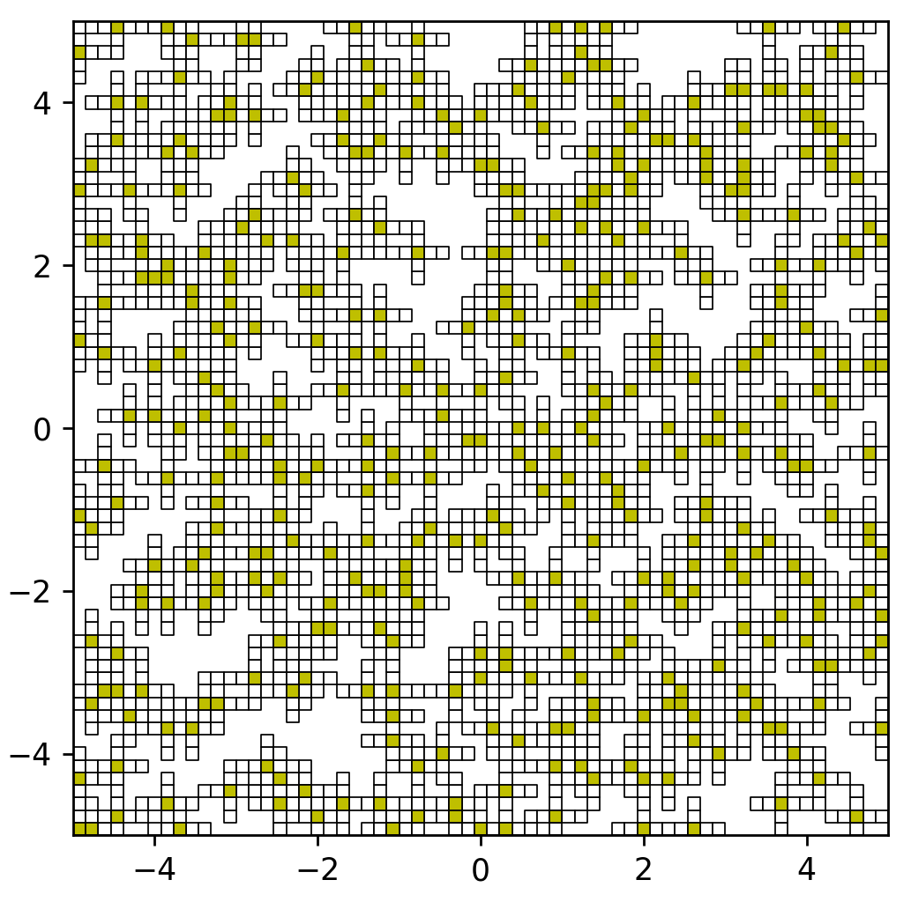
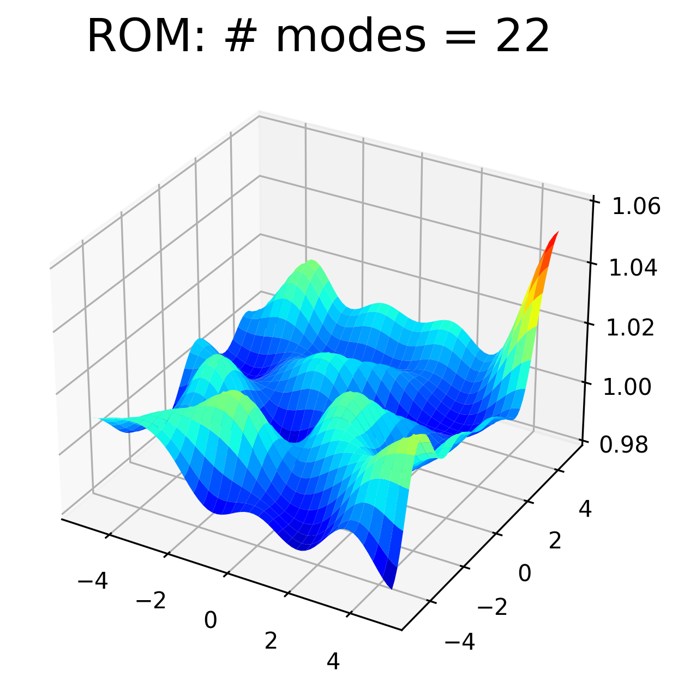
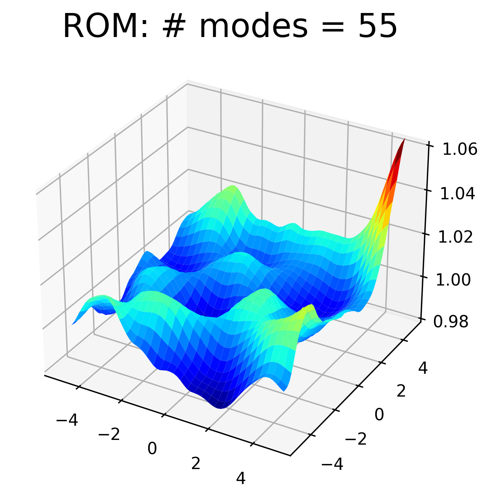
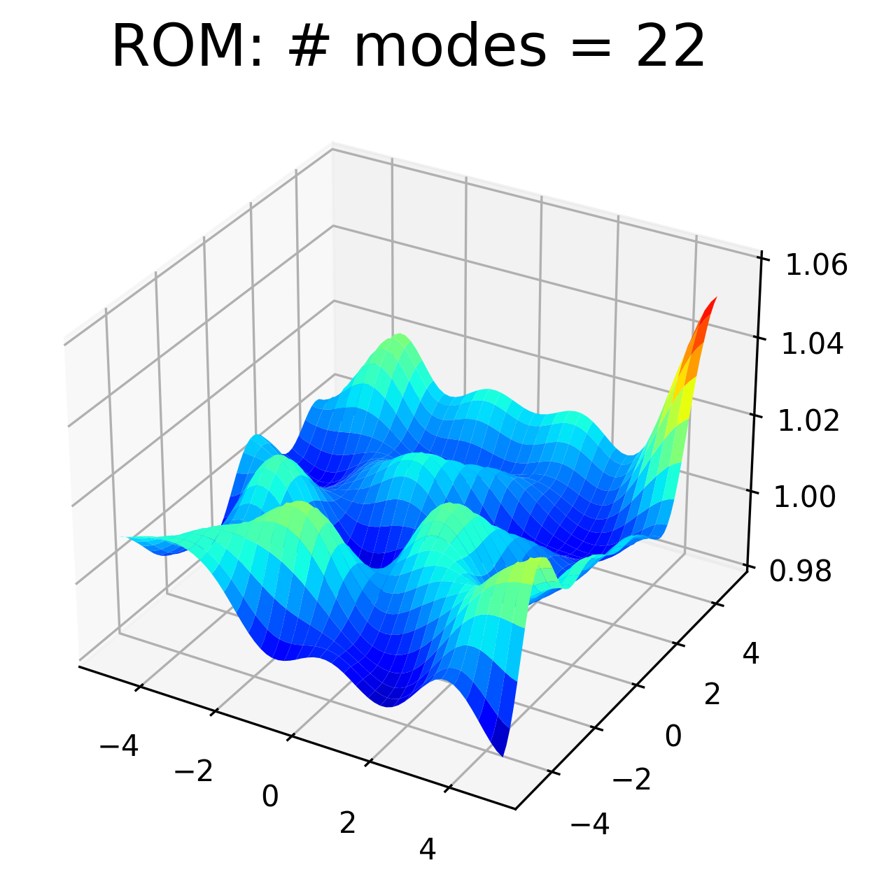
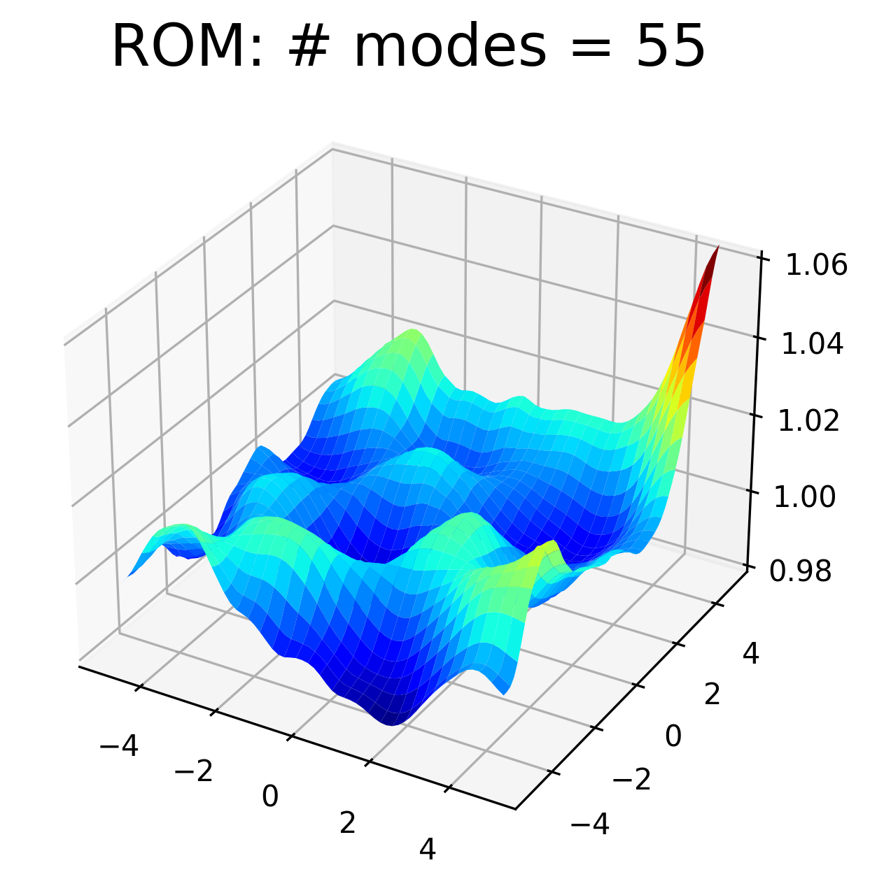

2D SWE: hyper-reduced Galerkin (example 1)#
ROM technique: Hyper-reduced Galerkin with gappy POD
problem: 2D shallow water equations (SWE)
Prerequisites#
A valid build of the tutorials, see here, and the following env variables set:
export REPOSRC=<full-path-to-the-pressio-tutorials-source-repo>/end-to-end-roms export BUILDDIR=<full-path-to-where-you-built-the-tutorials>
To run all scripts below, you MUST be in the correct end-to-end directory:
cd $BUILDDIR/end-to-end-roms/2d_swe_galerkin_hypred_1
Workflow File#
The workflow file for this demo is shown below for exposition purposes, but it is automatically copied to the build directory, so you don’t need to do anything:
1problem: 2d_swe
2
3parameterSpace:
4 names: ['coriolis', 'pulsemag', 'gravity']
5 trainPoints:
6 0: [-1.0, 0.125, 9.8]
7 1: [ 0.0, 0.125, 9.8]
8 testPoints:
9 0: [-0.5, 0.125, 9.8]
10
11fom:
12 meshSize: [65, 65]
13 inviscidFluxReconstruction: "Weno3"
14 odeScheme: "RK4"
15 timeStepSize: 0.005
16 train:
17 finalTime: 5.0
18 stateSamplingFreq: 10
19 rhsSamplingFreq: 10
20 test:
21 finalTime: 5.0
22 stateSamplingFreq: 10
23 rhsSamplingFreq: 100
24
25offlineRom:
26 pod:
27 stateData:
28 useTrainingRuns: all
29 rhsData:
30 useTrainingRuns: all
31 sampleMesh:
32 random: 0.1
33
34onlineRom:
35 algorithm: hyperreducedGalerkin
36 podTruncation:
37 energyBased: [99.999, 99.99999]
Step 1: run FOMs#
python3 $REPOSRC/wf_foms.py --wf wf.yaml
The FOM stage is the same as here.
Step 2: offline rom#
python3 $REPOSRC/wf_offline_rom.py --wf wf.yaml
The offline rom takes care of using the FOM training data to compute the POD modes, computing samples meshes, and puts everything into an “offline_rom” subdirectory:
offline_rom/
├── pod_input.yaml
├── rhs_left_singular_vectors.bin
├── rhs_singular_values.txt
├── rhs_snapshots.bin
├── sample_mesh_random_0.100
├── state_left_singular_vectors.bin
├── state_singular_values.txt
└── state_snapshots.bin
Sample mesh#
In this demo, we use the sample mesh which is generated by keeping
randomly 10% of the mesh cells. The whole sample mesh is done by presssio-demoapps.
Note the generated sample mesh directory sample_mesh_random_0.100.
We can visualize the sample mesh as follows (note that given its random nature,
your plot might look slightly different):
python3 $REPOSRC/../tpls/pressio-demoapps/meshing_scripts/plot_mesh.py \
--wdir ./offline_rom/sample_mesh_random_0.100/ -p show
which shows a plot like the following (yellow cells denote the “sample mesh”, white cells denote the “stencil mesh”):
{kind=link}
Step 3: galerkin rom#
python3 $REPOSRC/wf_galerkin.py --wf wf.yaml
Running the Galerkin driver means the following C++ code is being executed:
template<class ScalarType, class FomRhsType>
class ExplicitGalerkinHyperReducer
{
static_assert(pressio::is_vector_eigen<FomRhsType>::value,
"FomRhsType must be an Eigen vector");
using matrix_type = Eigen::Matrix<ScalarType, -1, -1, Eigen::ColMajor>;
matrix_type P_;
public:
using time_type = ScalarType;
using right_hand_side_operand_type = FomRhsType;
ExplicitGalerkinHyperReducer(const std::string & projFile,
const int numModes){
P_ = create_colmajor_eigen_matrix_and_load_from_binary_with_extents<
ScalarType>(projFile, numModes);
}
template<class ResultType>
std::enable_if_t<pressio::is_vector_eigen<ResultType>::value>
operator()(const right_hand_side_operand_type & operand,
const time_type & /*unused*/,
ResultType & result) const
{
result = P_.transpose() * operand;
}
};
template<class FomSystemType, class ParserType>
void run_galerkin_hyperreduced(const FomSystemType & fomSystem,
const ParserType & parser)
{
namespace pode = pressio::ode;
namespace prom = pressio::rom;
namespace pgal = pressio::rom::galerkin;
using scalar_type = typename FomSystemType::scalar_type;
using reduced_state_type = Eigen::Matrix<scalar_type, Eigen::Dynamic, 1>;
const auto modeCount = parser.romModeCount();
const auto & basisFile = parser.romFullMeshPodBasisFile();
auto basisFull = create_basis_and_read_from_file<scalar_type>(basisFile, modeCount);
auto basisOnStencil = create_basis_on_stencil_mesh(basisFull, parser);
auto affineShift = create_affine_shift_on_stencil_mesh<scalar_type>(parser);
const auto trialSpace = prom::create_trial_column_subspace<
reduced_state_type>(std::move(basisOnStencil), std::move(affineShift), parser.romIsAffine());
auto reducedState = trialSpace.createReducedState();
fill_rom_state_from_ascii(parser.romInitialStateFile(), reducedState);
StateObserver observer(parser.stateSamplingFreq());
const auto odeScheme = parser.odeScheme();
using fom_rhs_type = typename FomSystemType::right_hand_side_type;
using hr_op_t = ExplicitGalerkinHyperReducer<scalar_type, fom_rhs_type>;
hr_op_t H(parser.romGalerkinHypRedOperatorFile(), modeCount);
auto problem = pgal::create_unsteady_explicit_problem(odeScheme, trialSpace, fomSystem, H);
typename FomSystemType::time_type startTime{0};
const auto numSteps = pode::StepCount{parser.numSteps()};
pode::advance_n_steps(problem, reducedState, startTime,
parser.timeStepSize(), numSteps, observer);
}
At the end, you should have the following directory structure:
.
├── CMakeFiles
├── Makefile
├── cmake_install.cmake
├── fom_mesh
├── fom_test_runid_0
├── fom_train_runid_0
├── fom_train_runid_1
├── hyperreduced_galerkin_truncation_energybased_99.99999_sample_mesh_random_0.100_runid_0
├── hyperreduced_galerkin_truncation_energybased_99.999_sample_mesh_random_0.100_runid_0
├── hyperreducer_99.99999_sample_mesh_random_0.100
├── hyperreducer_99.999_sample_mesh_random_0.100
├── offline_rom
├── plot.py
└── wf.yaml
Step 4: process results#
Accuracy#
# from within $BUILDDIR/end-to-end-roms/2d_swe_default_galerkin
python3 $REPOSRC/wf_reconstruct_on_full_mesh.py
python3 plot.py
 



{kind=link}
{kind=link}
Runtime comparison#
The results above show the accuracy, but we also want to assess the computational gain. Thanks to the sample mesh, the runtime of the ROMs are just a fraction of the FOM runtime. You can check this by doing
If you do tail -n 2 fom_*/out.log, you see something as follows:
==> fom_test_runid_0/out.log <==
elapsed 6.71033
[info] [1806179] Finalizing pressio logger
==> fom_train_runid_0/out.log <==
elapsed 6.86063
[info] [1805967] Finalizing pressio logger
==> fom_train_runid_1/out.log <==
elapsed 6.75992
[info] [1806103] Finalizing pressio logger
Then do tail -n 2 hyperreduced_*/out.log, you will see:
==> hyperreduced_galerkin_truncation_energybased_99.999_sample_mesh_random_0.100_runid_0/out.log <==
elapsed 0.854369
[info] [1812457] Finalizing pressio logger
==> hyperreduced_galerkin_truncation_energybased_99.99999_sample_mesh_random_0.100_runid_0/out.log <==
elapsed 1.01332
[info] [1812527] Finalizing pressio logger